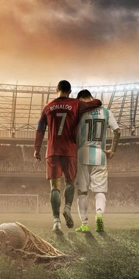

A Labdarúgás (Foci)
Miért ez a legnépszerűbb sport?
A labdarúgás, vagy köznyelven foci, a világ legnépszerűbb csapatsportja.
Két, tizenegy főből álló csapat játssza egymás ellen.
"A foci nem élet-halál kérdése. Sokkal fontosabb annál."
- Bill Shankly híres mondása
A népszerűség 4 titka
A labdarúgásnak becslések szerint több mint 3,5 milliárd rajongója van világszerte. De vajon miért?
-
Bárhol játszható: Nem kell hozzá drága felszerelés, csak egy labda és egy kis tér.
Lehet játszani füvön, betonon, homokban vagy akár teremben is.
-
Bárkiből lehet sztár: Nem számít a testalkat. Míg a kosárlabdában az óriások dominálnak,
a fociban az alacsonyabb játékosok (mint pl. Messi) is a csúcsra juthatnak technikai tudásukkal.
-
Izgalom és dráma: Mivel kevés gól esik, a feszültség végig magas.
Egyetlen pillanat alatt megfordulhat az eredmény, és a "kicsi" csapat is legyőzheti a "nagyot".
-
Közösségépítő erő: A foci egy globális nyelv, ami összeköti az embereket
Brazíliától Magyarországig.
Képek a sportról
Stadion (internetes forrásból):

Kedvenc játékos (helyi fájlból):

Szükséges felszerelések
- Focicipő (stoplis)
- Sípcsontvédő
- Mez és nadrág
- Labda
Minden idők legjobbjai
- Pelé
- Diego Maradona
- Lionel Messi
Bajnokság állása
| Helyezés |
Csapat |
Pontszám |
| 1. |
Real Madrid |
85 |
| 2. |
FC Barcelona |
82 |
| 3. |
Manchester City |
80 |
|
Összes csapat száma a ligában: 20
|
További részletekért kattints a FIFA,UEFA oldalakra.